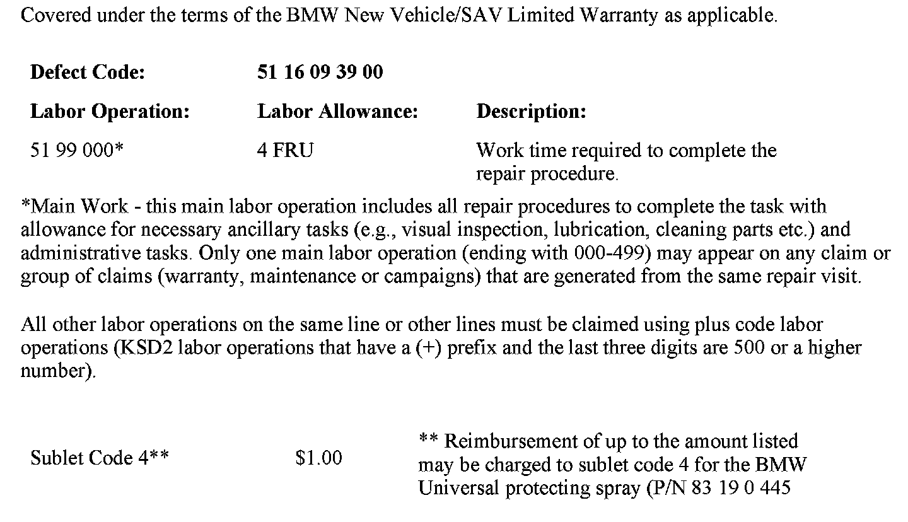
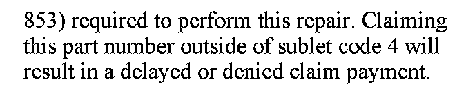
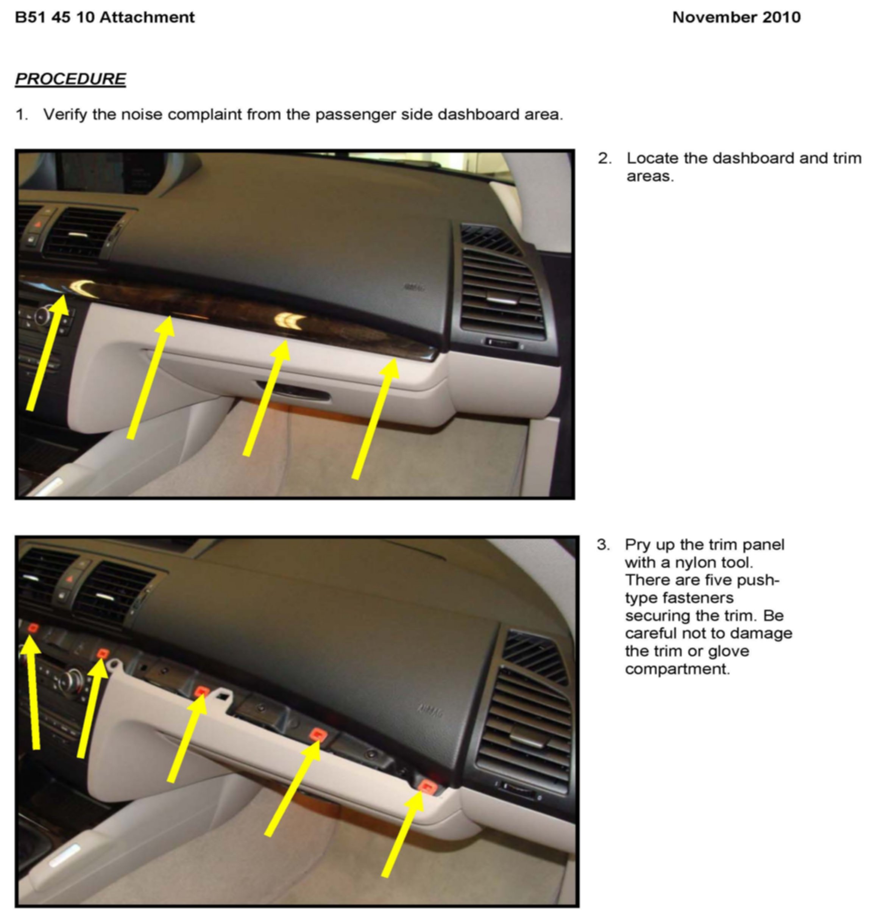
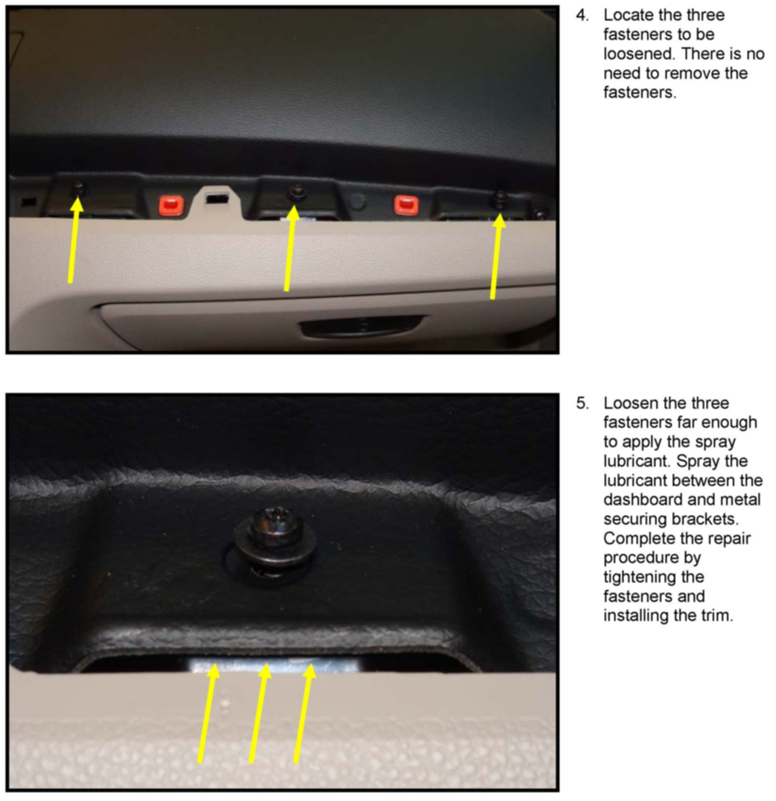

Interior - RH Dashboard Creaking/Clicking Noises
SI B51 45 10Body Equipment
November 2010
Technical Service
SUBJECT
Creaking/Clicking Noises: Dashboard Passenger Side
MODEL
E82, E88 (1 Series) produced from September 1, 2004
SITUATION
When driving on rough roads, creaking/clicking noises may occur from the area of the passenger side dashboard.
CAUSE
The noise is coming from the mating surfaces between the glove compartment and dashboard mounts.
CORRECTION
Lubricate the mating surfaces between the glove compartment and the dashboard mounts.
PROCEDURE
Refer to the attachment.
PARTS INFORMATION


WARRANTY INFORMATION
ATTACHMENT


B514510 - Procedure